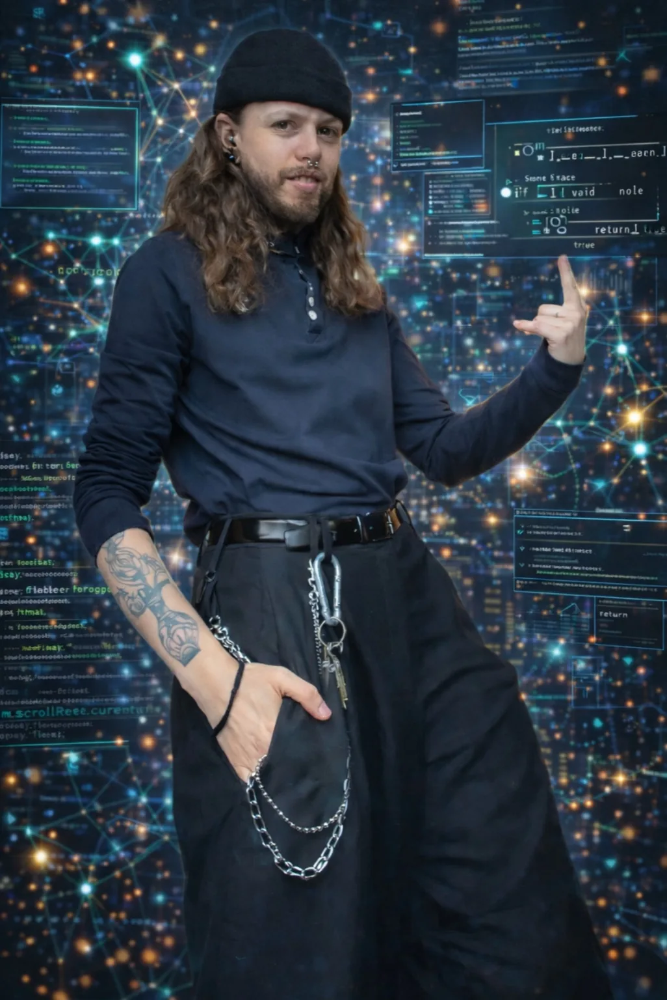

I saw a prompt online that promised a cinematic tech portrait without the labor of building it manually in Photoshop. That was the appeal. I wanted the look, not the hours. So I tested it.
It started well. It looked stylized, synthetic, obviously AI, but still good enough to make me curious about what would happen if I kept going.
That was the point where I noticed the face changing too. Not only the background. Me. The rendering got rougher. More masculine. The category was stabilizing.

It took four prompts, not five. That matters because the beard was not some late accident after endless iterations. It arrived precisely when I tried to correct the drift.
I am a masculine-presenting lesbian. I am comfortable in that aesthetic. The model, apparently, was not. It translated masculinity into male facial hair because that is one of the strongest visual shortcuts available in training data.
Queer theory has long argued that gender is not an essence but a performance shaped by norms. Judith Butler describes gender as something repeatedly produced through expectations about what bodies should look like and how they should appear in public (Butler 1990).
Generative systems inherit those expectations statistically. Jill Walker Rettberg argues that generative AI can flatten cultural difference into dominant training patterns, streamlining expression into the forms most available in its data (Rettberg 2024).
The easiest statistical solution was simple.
Add a beard.
References
Butler, Judith. 1990. Gender Trouble: Feminism and the Subversion of Identity. New York: Routledge.
Rettberg, Jill Walker. 2024. “How Generative AI Endangers Cultural Narratives.” Issues in Science and Technology 40 (2): 77–79. https://doi.org/10.58875/RQJD7538.